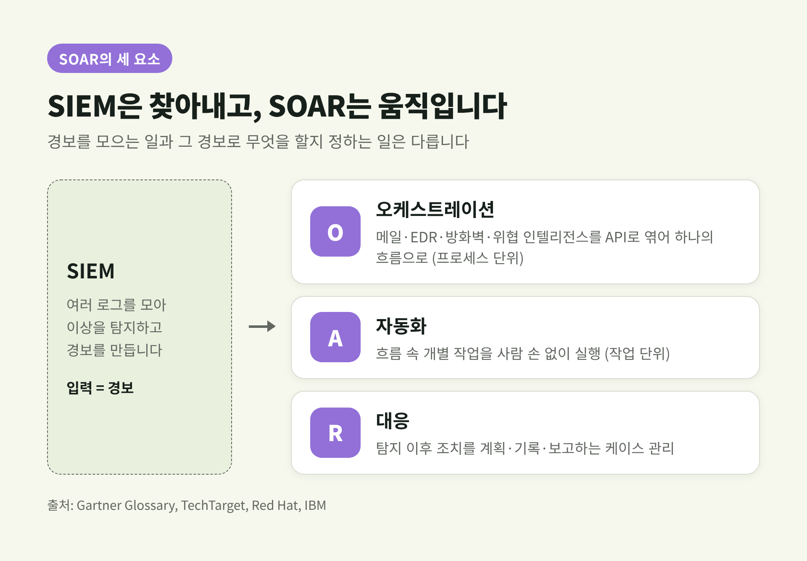
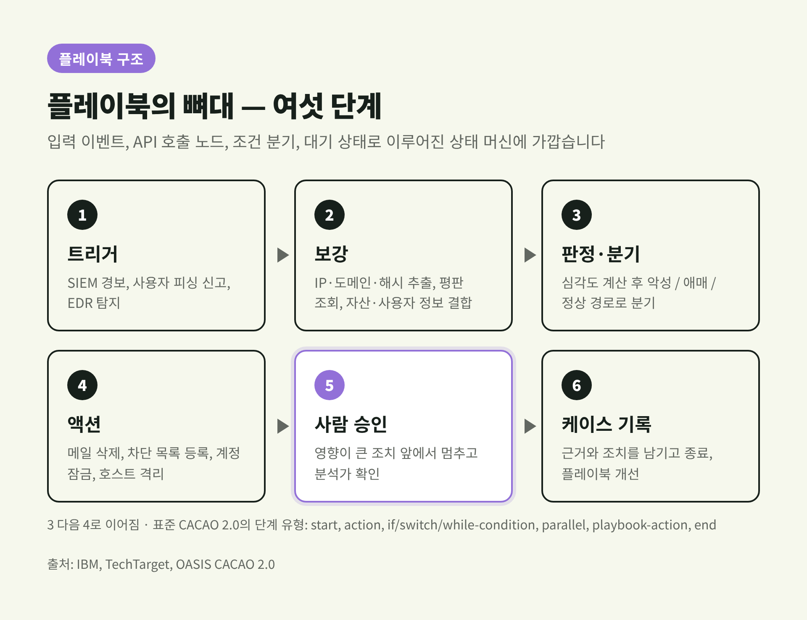
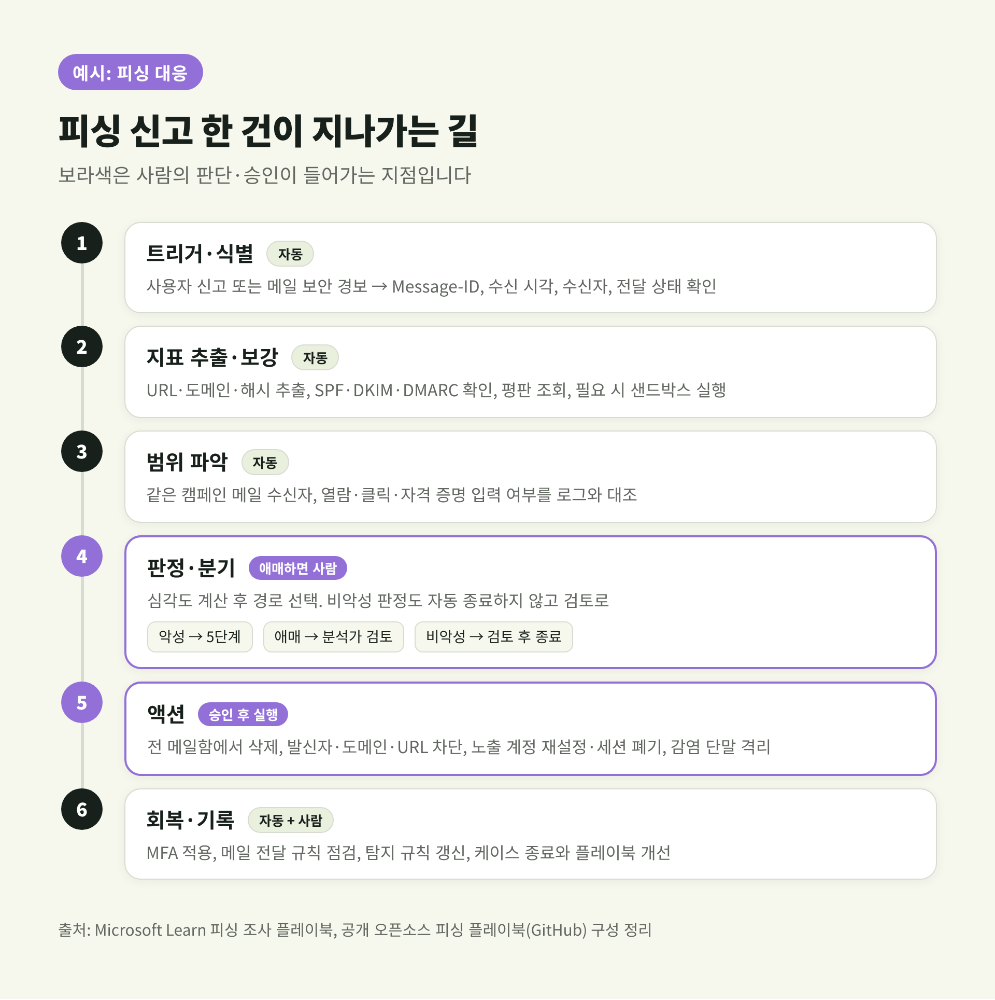
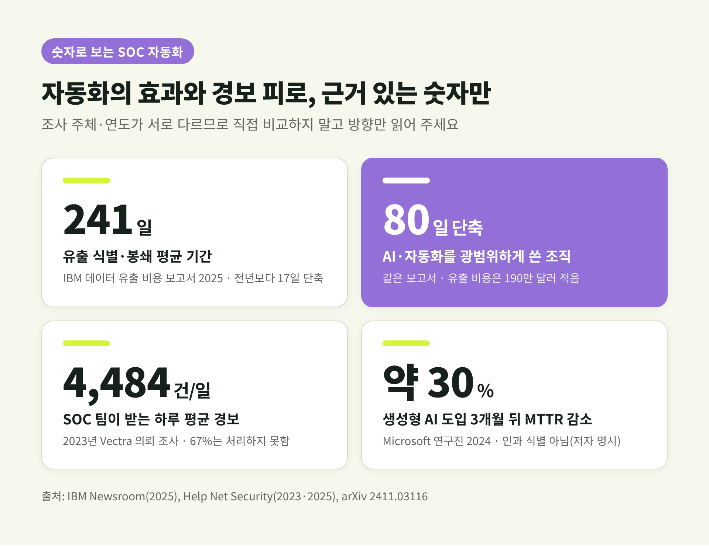
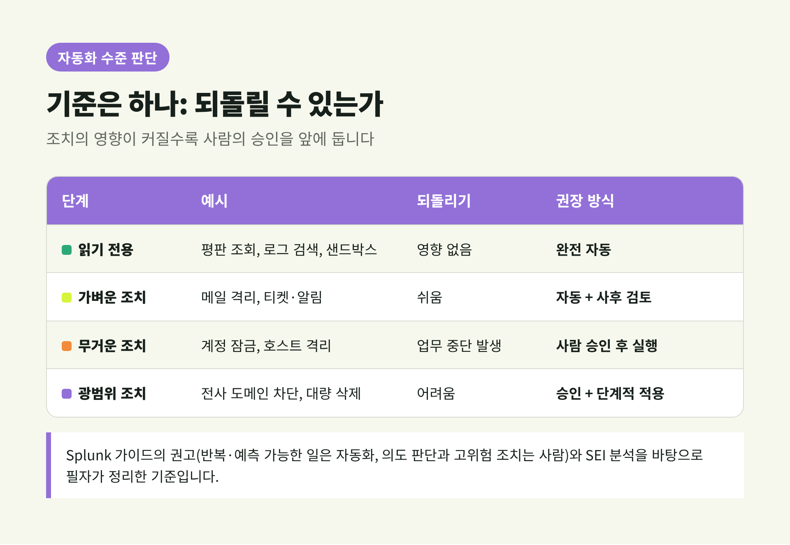
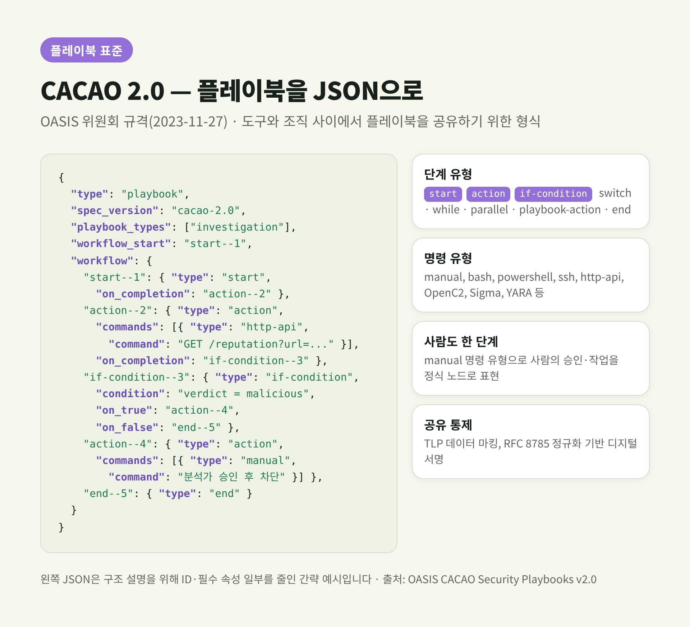

SOAR 플레이북의 원리 — 보안 경보 하나가 자동 대응이 되기까지

이번 글에서는 SOAR 플레이북이 어떻게 움직이는지 정리해 보겠습니다. SIEM이 울린 경보 하나가 보강과 판정을 거쳐 격리 같은 자동 대응으로 이어지는 과정을 단계별로 따라갑니다. 설계할 때 어디서 사람이 개입해야 하는지, 무엇이 잘못될 수 있는지도 함께 다룹니다.
세 줄 요약 - SOAR는 경보를 모아 사람과 자동화가 함께 분류하고, 대응 절차를 디지털 워크플로로 정의하는 기술입니다. - 플레이북은 트리거 → 보강 → 판정·분기 → 액션 → 사람 승인 → 케이스 기록의 흐름으로 짜입니다. - 핵심은 "얼마나 많이 자동화하느냐"가 아니라 "되돌리기 어려운 조치 앞에 누가 서 있느냐"입니다.
■ SOAR란 무엇인가
Gartner 용어집은 SOAR를 이렇게 정의합니다. 보안 운영팀이 감시하는 입력을 수집할 수 있게 해 주는 기술이라는 것입니다. SIEM 같은 곳에서 온 경보를 사람과 자동화가 함께 분석·분류하고, 대응 절차를 디지털 워크플로로 정의하게 해 준다는 설명이 뒤따릅니다.
용어 자체는 Gartner가 2015년에 만들었습니다. 처음엔 '보안 운영·분석·보고'의 약자였다가 2017년에 지금의 뜻으로 바뀌었다고 알려져 있습니다.
이름의 세 단어는 각각 역할이 다릅니다.
- 오케스트레이션(Orchestration): 방화벽, 메일 서버, EDR, 위협 인텔리전스처럼 따로 노는 도구를 API로 엮어 하나의 흐름으로 만듭니다.
- 자동화(Automation): 그 흐름 안의 개별 작업을 사람 손 없이 실행합니다.
- 대응(Response): 탐지 이후의 조치를 계획하고 기록하고 보고하는 케이스 관리 영역입니다.
Red Hat의 설명이 간결합니다. 오케스트레이션은 프로세스 단위이고, 자동화는 작업 단위라는 것입니다.
SIEM과의 관계도 짚어 둘 만합니다. SIEM은 여러 곳의 로그를 모아 이상을 찾아내는 데 무게를 둡니다. SOAR는 그 다음, 즉 "그래서 무엇을 할 것인가"를 맡습니다. 요즘은 두 제품의 경계가 흐려져 SIEM 안에 자동화 기능이 들어가는 경우도 많습니다.

■ 플레이북의 뼈대 — 여섯 단계
플레이북은 탐지·조사·대응 단계를 그린 프로세스 지도입니다. IBM은 플레이북이 완전 자동일 수도, 완전 수동일 수도, 섞여 있을 수도 있다고 설명합니다. 여러 소스의 설명을 모으면 대체로 다음 여섯 단계로 정리됩니다.
- 트리거: SIEM 경보, 사용자의 피싱 신고, EDR 탐지 같은 이벤트가 플레이북을 깨웁니다.
- 보강(Enrichment): 경보에서 IP·도메인·해시·계정 같은 지표를 뽑아, 위협 인텔리전스 평판과 자산·사용자 정보를 덧붙입니다.
- 판정과 분기: 보강 결과로 심각도를 계산하고, 조건에 따라 경로를 나눕니다.
- 액션: 메일 삭제, 차단 목록 등록, 계정 잠금, 호스트 격리를 실행합니다.
- 사람 승인 지점: 영향이 큰 조치 앞에서 흐름을 멈추고 분석가의 확인을 받습니다.
- 케이스 기록: 무엇을 근거로 무엇을 했는지 남기고 종료합니다.
개발자 눈으로 보면 이것은 상태 머신에 가깝습니다. 입력 이벤트가 있고, 외부 API를 호출하는 노드가 있고, 조건 분기와 대기 상태가 있습니다. 실제로 플레이북 표준인 CACAO 2.0도 단계 유형을 start, action, if-condition, switch-condition, while-condition, parallel, playbook-action, end로 정의합니다. 다른 플레이북을 하위 단계로 호출할 수 있다는 점까지 함수 호출과 닮았습니다.

■ 피싱 신고 한 건을 따라가 보면
추상적인 구조보다 구체적인 흐름이 이해가 빠릅니다. 가장 흔한 사례인 피싱 대응을 예로 들겠습니다. Microsoft가 공개한 피싱 조사 플레이북과, 공개 저장소에 올라와 있는 오픈소스 피싱 플레이북의 구성을 바탕으로 정리했습니다.
1단계 — 트리거와 식별. 직원이 의심 메일을 신고하거나 메일 보안 경보가 올라옵니다. 플레이북은 원본 헤더에서 Message-ID, 수신 시각, 수신자, 전달 상태(전달·차단·격리)를 확인합니다.
2단계 — 지표 추출과 보강. 본문과 첨부에서 URL, 도메인, 파일 해시를 뽑습니다. SPF·DKIM·DMARC로 발신 인증을 확인하고, 각 지표의 평판을 위협 인텔리전스에서 조회합니다. 필요하면 URL과 첨부를 샌드박스에서 실행해 봅니다. 다만 공개 플레이북에서는 URL 샌드박스 실행이 기본값으로 꺼져 있고, 수 분이 걸릴 수 있다고 적혀 있습니다.
3단계 — 범위 파악. 같은 캠페인의 메일이 다른 사람에게도 갔는지 찾습니다. 누가 열었는지, 링크를 눌렀는지, 자격 증명을 입력했는지를 로그인 로그와 엔드포인트 기록에 대조합니다.
4단계 — 판정과 분기. 악성 판정이면 격리 경로로, 판단이 애매하면 분석가 검토로 보냅니다. 눈여겨볼 점은 공개 플레이북이 '비악성' 판정조차 자동 종료하지 않고 사람 검토로 넘기도록 기본값을 잡아 두었다는 것입니다.
5단계 — 액션과 승인. Microsoft 플레이북은 조치마다 적용 조건을 붙입니다. 메일이 전달됐다면 모든 메일함에서 삭제합니다. 자격 증명이 노출됐다면 계정을 잠그거나 비밀번호를 재설정하고, 세션과 토큰을 폐기합니다. 악성 인프라가 확인되면 발신자·도메인·URL을 차단하고, 악성코드가 실행됐다면 엔드포인트를 격리합니다. 공개 플레이북은 여기서 더 보수적입니다. 다른 메일함의 동일 메일 검색·삭제는 분석가 승인 후에만 실행되고, 지표 자동 차단도 기본값이 꺼져 있습니다.
6단계 — 회복과 기록. MFA 적용, 메일함 전달 규칙 점검(공격자가 남긴 지속성 확인), 필터 정책 개선, 탐지 규칙 갱신까지 마친 뒤 케이스를 닫습니다. 마지막 항목은 플레이북 자체를 고치는 일입니다. NIST도 2025년 4월 SP 800-61 3판에서 사고 대응을 CSF 2.0의 여섯 기능 전체에 걸친 위험관리 활동으로 다시 정리했습니다. 대응은 케이스를 닫는 데서 끝나지 않고, 다음 탐지와 대응을 고치는 데까지 이어진다는 관점입니다.

■ 커넥터와 API — 플레이북이 손발을 얻는 방식
플레이북의 각 액션은 결국 외부 시스템에 대한 API 호출입니다. SOAR는 API, 미리 만들어진 플러그인, 직접 만든 통합으로 보안 도구와 비보안 도구를 연결합니다. 분석가가 콘솔 여러 개를 오가지 않게 해 주는 것이 이 계층의 가치입니다.
현실적인 한계도 분명합니다. 카네기멜런대 SEI는 통합되지 않은 기술 하나하나가 플랫폼의 가치를 깎는다고 지적합니다. 연결할 도구가 많을수록 인증 정보 관리, API 변경 대응, 호출 실패 처리가 모두 일이 됩니다.
실무에서 신경 쓸 부분은 대략 이렇습니다.
- 커넥터마다 필요한 최소 권한만 부여합니다. 플레이북 계정은 공격자가 노리기 좋은 고권한 계정이 되기 쉽습니다.
- 외부 API의 시간 초과와 호출 한도를 전제로 재시도와 대체 경로를 설계합니다.
- 보강 단계가 실패했을 때 '정보 없음'을 '안전'으로 해석하지 않게 합니다.
CACAO 표준에 'manual' 명령 유형이 정식으로 들어 있다는 점도 시사적입니다. 사람이 수행하는 단계 역시 플레이북의 한 노드라는 뜻입니다.
■ 효과는 어디까지 확인됐나
자동화의 효과는 숫자로 이야기되곤 합니다. 다만 근거가 있는 숫자만 골라야 합니다.
IBM의 2025년 데이터 유출 비용 보고서는 전 세계 평균 유출 비용을 444만 달러로 집계했습니다. 유출을 식별하고 봉쇄하는 데 걸린 시간은 평균 241일이었습니다. 보안 운영에 AI와 자동화를 광범위하게 활용한 조직은 유출 비용이 190만 달러 적었고, 수명주기가 80일 짧았습니다.
Microsoft 연구진의 2024년 논문도 참고할 만합니다. 150개 넘는 조직의 실제 운영 데이터, 사고 9만 5천여 건을 분석했습니다. 생성형 AI 보조 도구를 도입한 지 3개월 뒤 사고 평균 해결 시간(MTTR)이 약 30% 줄었다는 결과입니다. 다만 저자들 스스로 인과관계를 식별한 것은 아니라고 밝혔고, 자사 제품을 평가한 연구라는 점도 감안해야 합니다. 도입 1~2개월 차에는 통계적으로 유의한 차이가 없었다는 점도 같이 적어 둡니다.
반대편 숫자도 있습니다. 2023년 한 조사에서 SOC 팀은 하루 평균 4,484건의 경보를 받았고, 그중 67%는 처리하지 못했다고 답했습니다. 분석가의 83%는 경보가 오탐이라고 응답했습니다. SEI의 2021년 글은 하루 약 1만 건, 오탐률 최대 80%라는 보고를 인용합니다. 조사마다 규모는 다르지만 방향은 같습니다. 사람이 경보를 다 볼 수 없다는 것입니다.

마케팅 자료에서 흔히 보이는 'MTTR 90% 감소' 같은 수치는 독립적인 근거를 찾지 못해 이 글에서는 쓰지 않았습니다. 자기 조직의 기준선을 먼저 재 두지 않으면, 개선 폭도 말할 수 없습니다.
■ 어디까지 자동으로 맡길 것인가
가장 어려운 결정은 자동화의 수준입니다. Splunk의 SOC 자동화 가이드는 반복적이고 예측 가능한 일을 자동화하라고 권합니다. 트리아지, 로그 검색, 오탐 걸러내기, 지표 보강, 티켓 생성과 알림이 여기에 속합니다. 반면 전체 조사, 근본 원인 분석, 위협 헌팅, 그리고 의도의 판단은 사람에게 남기라고 합니다. 의심스러운 로그인이 공격인지, 출장 중인 직원인지는 맥락을 아는 사람이 가려야 한다는 것입니다. 같은 글은 계정 비활성화나 장비 격리 전에 분석가 승인을 받는 예를 듭니다.
저는 이 권고들을 '되돌릴 수 있는가'라는 한 가지 질문으로 정리해 봅니다. 이것은 특정 문서의 기준이 아니라 위 소스들을 종합한 개인적인 정리입니다.
| 단계 | 예시 | 되돌리기 | 권장 방식 |
|---|---|---|---|
| 읽기 전용 | 평판 조회, 로그 검색, 샌드박스 | 영향 없음 | 완전 자동 |
| 가벼운 조치 | 메일 격리, 티켓·알림 | 쉬움 | 자동 + 사후 검토 |
| 무거운 조치 | 계정 잠금, 호스트 격리 | 업무 중단 발생 | 사람 승인 후 실행 |
| 광범위 조치 | 전사 도메인 차단, 대량 삭제 | 어려움 | 승인 + 단계적 적용 |

예전엔 '사람이 모든 경보를 본다'가 전제였습니다. 지금은 '사람은 판단이 필요한 경보만 본다'로 바뀌고 있습니다. 그 경계를 어디에 긋느냐가 곧 플레이북 설계입니다.
■ 자동화가 일을 그르치는 방식
자동화는 실수도 빠르게, 그리고 크게 합니다. Splunk 가이드가 꼽는 실패 유형은 구체적입니다.
- 정상 사용자·시스템 차단: 오탐 하나가 계정 잠금이나 서버 격리로 이어집니다.
- 시스템 중단: 잘못 짠 플레이북이 시스템을 오프라인으로 만들 수 있습니다.
- 경보 폭주: 잘못된 규칙, 불완전한 데이터, 약한 보강이 오히려 경보를 늘립니다.
- 신뢰 상실: 검토 없이 움직인 자동화가 한 번 사고를 치면, 팀이 자동화 자체를 끄게 됩니다.
여기서 나오는 설계 원칙은 소박합니다. 운영 전에 테스트하고, 운영 후에도 계속 튜닝하며, 모든 플레이북에 대체 경로를 둡니다. SEI는 여기에 두 가지를 더합니다. 워크플로를 꼼꼼히 문서화할 경험 많은 인력이 필요하고, 효과를 잴 운영 지표가 있어야 고칠 수 있다는 것입니다.
몇 가지를 덧붙이면 이렇습니다.
- 차단 목록에는 만료 시간을 두고, 조치마다 해제 절차를 함께 만듭니다.
- 핵심 서버, 경영진 계정처럼 오차단의 대가가 큰 대상은 허용 목록으로 따로 관리합니다.
- 보강 API가 응답하지 않으면 자동 조치를 멈추고 사람에게 넘깁니다.
- 플레이북도 코드처럼 버전 관리하고, 테스트 환경에서 재현해 본 뒤 배포합니다.
■ 플레이북을 공유하는 표준, CACAO
플레이북은 오랫동안 제품마다 고유한 형식에 묶여 있었습니다. 도구를 바꾸면 플레이북을 처음부터 다시 만들어야 했습니다.
OASIS의 CACAO Security Playbooks 2.0은 이 문제를 겨냥한 표준입니다. 2023년 11월 27일 위원회 규격(Committee Specification 01)으로 승인됐고, 1.0과 1.1을 대체합니다. 플레이북을 JSON으로 표현하며, 조직과 도구 사이에서 작성·문서화·공유할 수 있게 하는 것이 목적입니다.
주요 요소는 다음과 같습니다.
- 플레이북 유형: 탐지, 조사, 완화, 복구(remediation), 예방, 알림, 공격, 교란(engagement) 등 여덟 가지
- 워크플로 단계: 앞서 본 start·action·조건 분기·parallel·playbook-action·end
- 명령 유형: manual, bash, powershell, ssh, http-api, OpenC2, Sigma, YARA 등
- 공유 통제: TLP 같은 데이터 마킹, JSON 정규화(RFC 8785) 기반 디지털 서명
서명이 들어 있다는 점이 흥미롭습니다. 남이 만든 플레이북을 가져와 실행한다는 것은 남이 만든 코드를 실행하는 것과 같기 때문입니다.

■ AI와 LLM이 가져오는 변화
SOAR의 위상도 흔들리고 있습니다. Dark Reading은 Gartner가 SOAR를 '정점에 오르기 전에 구식이 될 기술'로 분류했다고 보도했습니다. SOAR 기능이 SIEM·XDR 같은 다른 제품에 흡수되고, 자동화가 보안 제품의 기본 기능이 됐다는 이유입니다. 다만 이 분류가 어느 보고서의 어떤 표현인지는 보도마다 차이가 있고, 원문은 유료라 직접 확인하지 못했습니다. 분명한 것은 '자동화'가 아니라 '자동화만 하는 독립 제품'이 문제라는 해석입니다.
그 자리에 AI SOC 에이전트가 거론됩니다. Gartner는 2025년 보안 운영 하이프 사이클에서 AI SOC 에이전트를 초기 '혁신 촉발' 단계에 두었습니다. 경보 트리아지, 자연어 조사, 오탐 감소, 경보 보강, 보고서 요약 같은 역할이 기대됩니다. 같은 기관은 2028년까지 대형 SOC의 70%가 AI 에이전트를 시범 도입하겠지만, 구조화된 평가 없이 측정 가능한 개선을 얻는 곳은 15%에 그칠 것이라고 내다봤습니다.
2026년 오슬로대와 노르웨이 국방연구소의 연구는 이 지점을 잘 보여줍니다. 같은 모델, 같은 경보, 같은 데이터로 실험했는데, 경보 설명과 로그 요약만 준 방식은 악성 사례를 하나도 잡지 못했습니다. 반면 미리 정의한 쿼리 중에서 고르게 하고, 근거를 요약하는 단계와 판정 단계를 나눈 구조화 워크플로는 악성 사례 정확도가 평균 93%였습니다. 한 모델은 정상 사례를 전부 '불확실'로 분류해, 운영에 쓰면 모든 오탐이 사람에게 넘어가는 한계도 보였습니다. 단일 시나리오의 개념 증명이라는 점은 감안해야 합니다.
이 결과는 플레이북 이야기와 겹칩니다. LLM도 정해진 도구, 정해진 순서, 제한된 권한 안에서 움직일 때 쓸모가 생깁니다. 결국 AI 시대의 SOC 자동화도 잘 설계된 플레이북 위에서 돌아간다고 봐야 할 것입니다.
정리하면 이렇습니다. SOAR 플레이북은 경보를 받아 정보를 붙이고, 판단하고, 조치하고, 기록하는 절차를 코드로 옮긴 것입니다. 보강은 과감하게 자동화하고, 되돌리기 어려운 조치 앞에는 사람을 세워 두는 것이 지금까지 확인된 무난한 설계입니다.
"자동화의 품질은 멈춰야 할 곳을 아는 데서 나온다."
플레이북을 처음 짠다면 무엇부터 자동화하겠느냐고 물으신다면, 차단보다 조회부터라고 답하겠습니다.
참고자료
- Gartner Glossary — Security Orchestration, Automation and Response (SOAR)
- TechTarget — What is SOAR
- IBM — What is SOAR
- Red Hat — What is SOAR
- CMU SEI — Benefits and Challenges of SOAR Platforms (2021)
- OASIS — CACAO Security Playbooks Version 2.0
- NIST — NIST Revises SP 800-61 (2025)
- Microsoft Learn — Security operations playbook: phishing
- GitHub demisto/content — Phishing Generic v3 playbook README
- IBM Newsroom — Cost of a Data Breach Report 2025
- Help Net Security — Average global data breach cost now $4.44 million (2025)
- Splunk — SOC Automation without Breaking Things
- Help Net Security — 67% of daily security alerts overwhelm SOC analysts (2023)
- Dark Reading — SOAR Is Dead, Long Live SOAR
- TechTarget — Is SOAR dead or alive? Sort of
- Help Net Security — Gartner: 70% of SOCs will pilot AI agents
- Help Net Security — What researchers learned about building an LLM security workflow (2026)
- arXiv — Generative AI and Security Operations Center Productivity (2024)